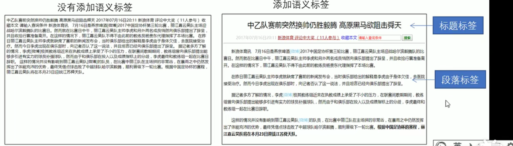
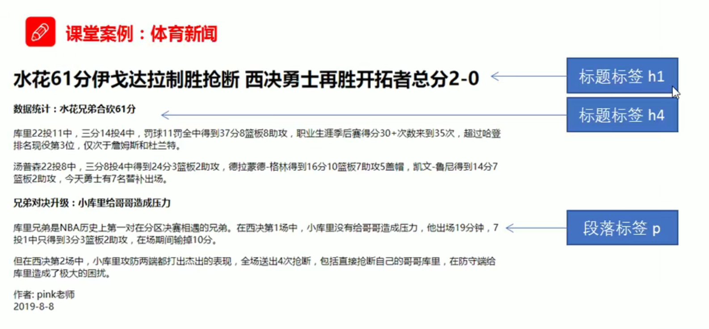

4 HTML常用标签
4.1 语义标签
学习标签是有技巧的，重点是记住每个标签的语义。简单理解就是指标签的含义，即这个标签是用来干嘛的。根据标签的语义，在合适的地方给一个最为合理的标签，可以让页面结构更清晰。

图4.1: 语义标签
4.2 标题标签
为了使网页更具有语义化，我们经常会在页面中用到标题标签。HTML提供了6个等级的网页标题，即<h1> - <h6>。
<h1>我是一级标题</h1>h单词head 的缩写，意为头部、标题。
标签语义：作为标题使用，并且依据重要性递减。
特点：
- 加了标题的文字会变的加粗，字号也会依次变大。
- 一个标题独占一行。
<h1>标题一共六级选，</h1>
<h2>文字加粗一行显。</h2>
<h3>由大到小依次减，</h3>
<h4>从重到轻随之变。</h4>
<h5>语法规范书写后，</h5>
<h6>具体效果刷新见。</h6>4.3 段落标签
在网页中，要把文字有条理地显示出来，就需要将这些文字分段显示。在HTML标签中，<p>标签用于定义段落，它可以将整个网页分为若干个段落。
<p>我是一个段落标签</p>p是单词paragraph的缩写，意为段落。标签语义：可以把HTML文档分割为若干段落。
特点∶
- 文本在一个段落中会根据浏览器窗口的大小自动换行。
- 段落和段落之间保有空隙。
4.4 换行标签
在HTML中，一个段落中的文字会从左到右依次排列，直到浏览器窗口的右端，然后才自动换行。如果希望某段文本强制换行显示，就需要使用换行标签<br />。
<br />br是单词break的缩写，意为打断、换行。标签语义∶强制换行。
特点︰
<br />是个单标签。<br />标签只是简单地开始新的一行，跟段落不一样，段落之间会插入一些垂直的间距。
4.5 文本格式化标签
在网页中，有时需要为文字设置粗体、斜体或下划线等效果，这时就需要用到HTML中的文本格式化标签，使文字以特殊的方式显示。 标签语义：突出重要性,比普通文字更重要.
| 语义 | 标签 | 单词 | 实例 | 说明 |
|---|---|---|---|---|
| 加粗 | <strong></strong>或者<b></b> |
strong | 强调 | 更推荐使用<strong>标签加粗语义更强烈 |
| 倾斜 | <em></em>或者<i></i> |
emphasize | 斜体 | 更推荐使用<em>标签加粗语义更强烈 |
| 删除线 | <del></del>或者<s></s> |
delete | 更推荐使用<del>标签加粗语义更强烈 |
|
| 下划线 | <ins></ins>或者<u></u> |
inserted | 下划线 | 更推荐使用<ins>标签加粗语义更强烈 |
4.6 布局标签
<div>和<span>是没有语义的，它们就是一个盒子，用来装内容的。
<div>这是头部</div>
<span>今日价格</ span>div是division的缩写，表示分割、分区。span意为跨度、跨距。
特点∶
<div>标签用来布局，但是现在一行只能放一个。大盒子<span>标签用来布局，一行上可以多个。小盒子4.7 图像标签和路径
4.7.1 图像标签
在HTML标签中，
<img>标签用于定义HTML页面中的图像。<img src="图像URL”/>img单词image的缩写，意为图像。 src是
标签的必须属性，是单词source的缩写。它用于指定图像文件的路径和文件名。
所谓属性︰简单理解就是属于这个图像标签的特性。
表4.2: 图像标签常见属性 属性 属性值 单词 说明 src 图片路径 source 必须属性 alt 文本 alternate 替换文本，图像不能显示的文字 title 文本 title 提示文本。鼠标放到图像上，显示的文字 width 像素 width 设置图像的宽度 heigth 像素 heigth 设置图像的高度 border 像素 border 设置图像的边框粗细 4.8 案例学习
图4.2: 案例学习
<!DOCTYPE html> <html lang="en"> <head> <meta charset="UTF-8"> <meta http-equiv="X-UA-Compatible" content="IE=edge"> <meta name="viewport" content="width=device-width, initial-scale=1.0"> <title>Document</title> </head> <body> <h1>水花61分伊戈达拉制胜抢断西决勇士再胜开拓者总分2-0</h1> <h4>数据统计:水花兄弟合砍61分</h4> <p> 库里22投11中，三分14投4中，罚球11罚全中得到37分8篮板8助攻，职业生涯季后赛得分30+次数来到35次 超过哈登排名现役第3位，仅次于詹姆斯和杜兰特。 </p> <p> 汤普森22投8中，三分8投4中得到24分3篮板2助攻，德拉蒙德-格林得到16分10篮板7助攻5盖帽，凯文-鲁尼得到14分7篮板2助攻，今天勇士有7名替补出场。 </p> <h4>兄弟对决升级:小库里给哥哥造成压力</h4> <p> 库里兄弟是NBA历史上第一对在分区决赛相遇的兄弟。在西决第1场中，小库里没有给哥哥造成压力，他出场19分钟，7投1中只得到3分3篮板2助攻，在场期间输掉10分。 </p> <p> 但在西决第2场中，小库里攻防两端都打出杰出的表现，全场送出4次抢断，包括直接抢断自己的哥哥库里，在防守端给库里造成了极大的困扰。 </p> <p> 作者: pink老师<br />2019-8-8 </p> </body> </html>